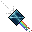

Como a progressão funciona
Encontre um Fiendish
Use exiva moe res ou o Radar Boss Portable.
Obtenha o core
Derrote a criatura e recolha o Soul Core correspondente.
Use o Obelisco
Insira o Soul Core no Obelisco da SoulPit.
Conclua a arena
Supere as ondas de criaturas do desafio.
Receba o bônus
Desbloqueie a Mastery e aumente a experiência recebida.
Animus Mastery
Resumo: cada criatura dominada começa com +2% de experiência. A progressão global aumenta em +0.2x a cada 3 criaturas dominadas, até o limite informado de +25%.
Anonymous Mastery
Progressão para criaturas customizadas que não possuem Soul Core oficial.
Como funciona
- O core salva automaticamente a alma do monstro derrotado.
- Ao dar look, é possível visualizar a qual criatura o core pertence.
- Cada vitória usando um Custom Soul Core concede +1 de progresso na Anonymous Mastery.
Comando
!masteryexibe o progresso de Animus Mastery e Anonymous Mastery.- A nova proficiência concede bônus de EXP contra criaturas custom elegíveis.
Monstros elegíveis
- Void / Netherbound.
- Fallen Usurpers.
- True Asuras.
- Sanctum: Firen, Firzen e Frezee.
SoulPit
Use o Soul Core no Obelisco, conclua o desafio em arena e libere a Mastery da criatura.
Desafio em arena
Jogadores enfrentam ondas de criaturas em uma pequena arena para desbloquear Animus Mastery.
Soul Core
Obtenha o Soul Core da criatura e use-o na SoulPit para iniciar o desafio.
Desbloqueio
Ao derrotar os inimigos, a Animus Mastery da criatura é liberada.
Obtenha os Soul Cores
Encontre criaturas Fiendish, confira as chances de drop e prepare o item usado na SoulPit.
Soulcore Seller
O NPC vende uma Soul Core Bag por 50kk. Ao usar a bag, você recebe o acesso para fazer a arena de uma criatura aleatória.


Encontrando Fiendish
- Use a magia exiva moe res.
- Use o Radar Boss Portable, disponível na Store.
Drops de Fiendish
- Soul Core: 50% de chance.
- Core da própria criatura: 15% de chance.
- Soul Prism: 10% de chance.
Uso
- Ativar desafios na SoulPit.
- Desbloquear bônus extras de experiência contra as criaturas.